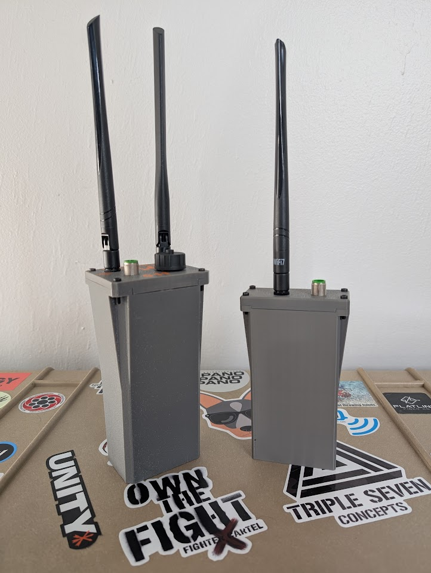

Use Cases
How people are using the Nucleus — from ATAK operations and portable TAKserver deployments to encrypted communications and off-grid mesh networking.

ATAK Operations
Full-speed ATAK over mesh — SA, chat, pictures, voice, video, and portable OpenTAKServer. No plugins required.
- Native ATAK over WiFi mesh via multicast
- LoRa CoT bridge extends SA miles beyond WiFi
- Voice, video streaming, optional OpenTAKServer
- WiFi mesh ~30 Mbps close range — max range varies with terrain, see test data for real-world results
- LoRa tested 8+ miles with line of sight

Secure Communications
Encrypted comms with no cloud accounts, no metadata collection, and no external infrastructure dependency.
- Reticulum — e2e encrypted messaging with forward secrecy
- Tailscale tunnels between remote nodes
- WPA3 mesh encryption at the transport layer
- Yggdrasil sovereign overlay (coming)

Mesh Communications
Voice calls, text messaging, GPS sharing, and internet distribution — all off-grid on the mesh.
- Jami encrypted voice/video via OpenDHT
- Meshtastic LoRa text and GPS over radio
- Internet gateway — Starlink/cellular shared across mesh
- Events, outdoor activities, field deployments
Ready to Build Your Network?
Get started with Nucleus mesh nodes. Contact us for pricing and availability.